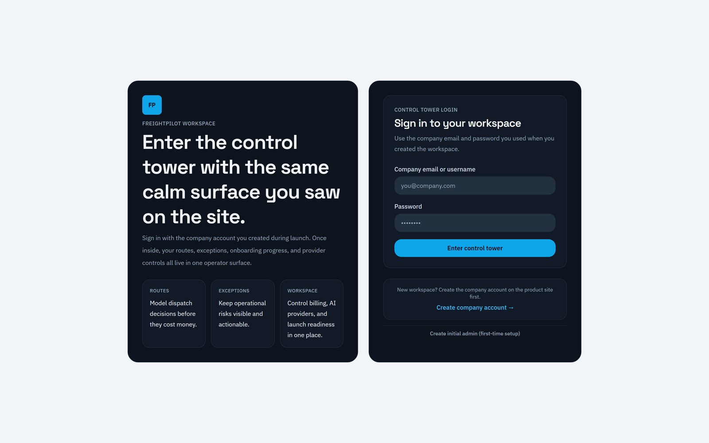
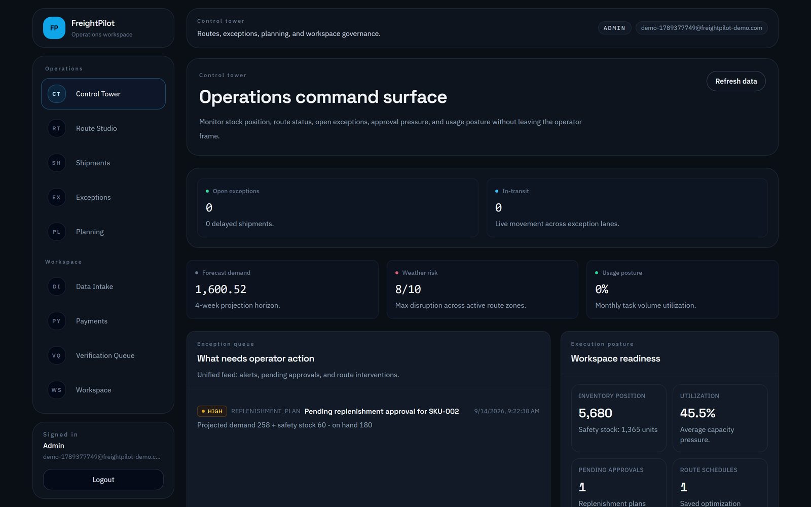
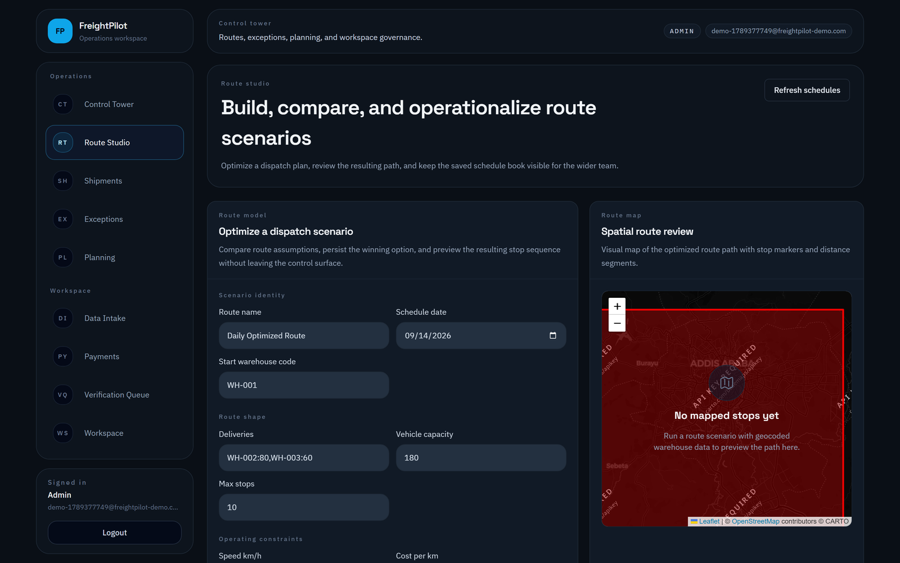
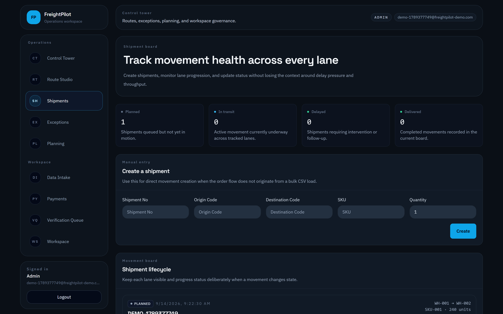
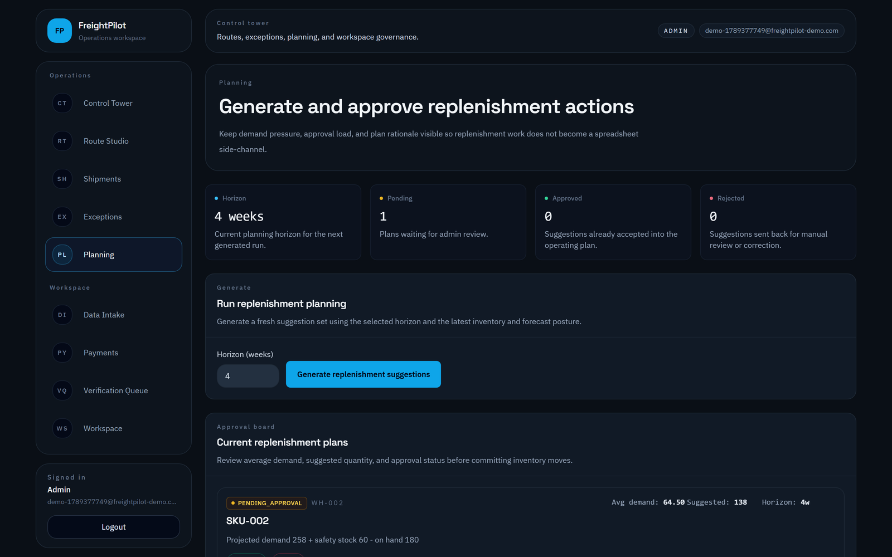
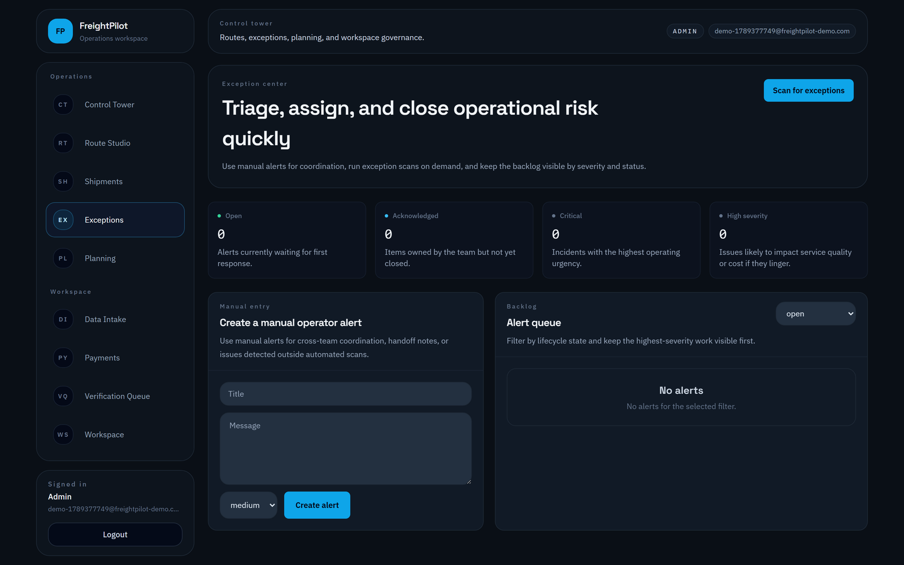
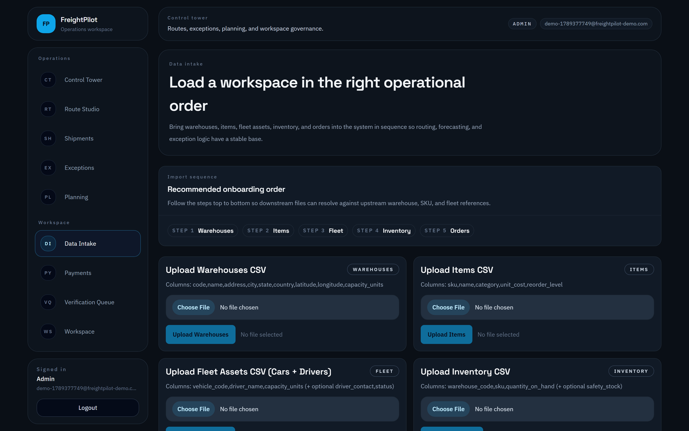
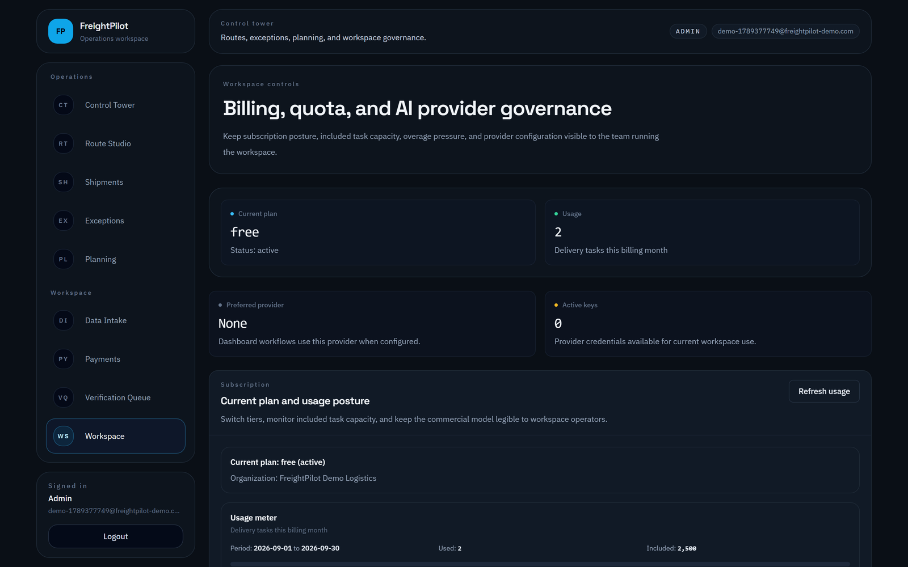

Control-tower login
Company email and workspace password · no desktop install
Operations command surface
Exception queue · workspace readiness · usage posture
Route studio
Weighted optimisation · persisted schedules · spatial review
Shipment execution
Lifecycle states · delay reasons · proof of delivery
Replenishment planning
Forecast-driven suggestions · approval workflow
Exception queue
Alerts · acknowledge / resolve / escalate · audit trail
Operational data intake
Five CSV categories · sample vs your data, stated plainly
Workspace, billing and providers
Subscription tier · usage · BYOK provider keys